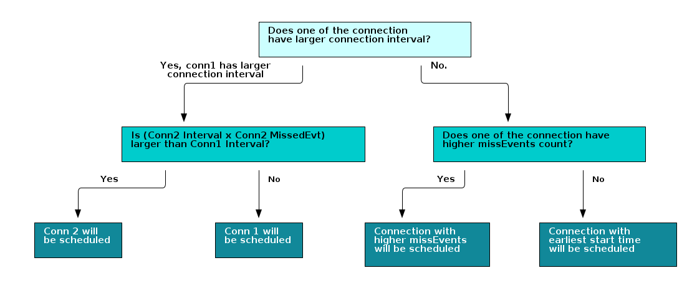
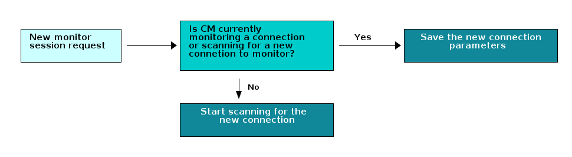

Application Layer¶
Since the micro stack can support multiple functionalities (broadcaster, observer, connection monitor), it is up to the application layer to define the behavior of the system. The following sections will discuss the TI provided implementations of monitor role.
micro_ble_cm.c: rtls_passive and connection monitor application
Connection Monitor (CM) Application¶
The connection monitor application is built on top of the uGAP layer operating in monitor mode and is responsible for implementing the high level connection tracking feature. This includes:
Initializing connection parameters for a connection to monitor
Performing the initial scan to find a connection event
Scheduling subsequent scans to continue following the connection
The following sections will describe the above list in detail.
Initializing CM Session¶
In order to follow a connection, the CM needs to know the connection parameters that were exchanged during the connection process between Central and Peripheral. These include:
access address
connection interval
hop value
next channel
channel map
CRC initialization value
These parameters can be obtained from a BLE5-Stack application by calling
the HCI_EXT_GetActiveConnInfoCmd command. Once they are obtained,
they should be shared (via an out of band mechanism such as UART, LIN, CAN etc)
with the CM device. The CM device then can use ubCM_startNewSession() to start the
initial scan.
Starting a Monitor Session¶
In order to start tracking a connection the connection monitor needs to perform an initial scan with long scan duration in order to catch a connection event. This scan should be at worst case the connection interval times the number of active channels in order to ensure the connection can be detected.
The logic trace below shows the initial scan of connection monitor and it was generated by enabling the RF observable pins on Central and Peripheral device in the connection (RX, TX) as well as the connection monitor (RX). For more information regarding RF observable, please refer to Debugging RF Output
Note
For example, if the active channel map is channel 0, 1, 2, 3, 4, 5 and the hop number is 1. The next channel sent from peripheral is 2 and connection interval is 7.5 ms. Then CM will stay at channel 2 for maximum 45 ms(6 * 7.5).
Monitoring a Connection¶
Once a packet is received during the initial scan the CM will setup smaller scans based on the next expected event. Since it is now monitoring the connection, it can calculate the channel and instant (adjusted for Central and Peripheral sleep clock accuracy) to listen for the next event.
The core of connection monitoring is based on
monitor_indicationCB: Invoked when a packet is received
monitor_completeCB: Invoked when a scan window has completed.The logic trace below shows the CM actively tracking a connection
The sequence diagram below illustrates the whole process of how CM starts monitoring the connection and report RSSI to application.
![@startuml
participant CM as "Connection Monitor"
participant Mul as "Multi-role"
participant Phone as "Phone"
Mul <-- Phone: Connection Request
== After connection has established ==
CM <- Mul: Pass needed information to Connection Monitor
rnote left
Multi-role device needs to pass Access Address,
connection interval, channel map,
hop increment, CRC init
and next channel to Connection Monitor.
end note
activate CM
CM --> CM: Start scanning for packet at next channel
Phone --> Mul: Send packet
Mul --> Phone: Send packet
...
... Connection Monitor will stay at next channel for maximum\nCI * (Number of Active Channel) amount of time...
...
Phone --> Mul: Send packet
Mul --> Phone: Send packet
deactivate CM
Group If Connection Monitor Initial Scan Timeout\nScan Timeout = (CI * Number of Active Channels)
CM --> CM: Back to Idle state
CM -> Mul: Notify Multi-role that sync failed
Mul -> CM: Send over needed information to restart \nConnection Monitor
end
Group After Connection Monitor syncs up
Phone --> Mul: Send acket
activate CM
CM --> CM: Scan packet sent from Phone and\nextract rssi
[<-CM : The rssi value from Phone will be \nsent to monitor_indicationCB
Mul --> Phone: Send Packet
CM --> CM: Scan packet sent from Multi-role device \nand extract rssi
[<-CM : The rssi value from Multi-role device will \nbe sent to monitor_indicationCB
CM --> CM: Finish one monitor event
[<-CM : Send notification to monitor_completeCB \nto indicate one monitor event has finished
CM -> Mul: One monitor event success. \nSend RSSI, timeStamp and monitored channel to Multi-role device
Deactivate CM
...
... Change to next channel and Connection Monitor continues monitoring the connection...
...
end
@enduml](../_images/plantuml-28e2a79b86292b558e7718d9993286fe23e66377.png)
Figure 165. Connection Monitor initialization and connection tracking¶
Lose Sync¶
Application layer can decide how many consecutive connection events
CM is allowed to miss by setting BLE_CONSECUTIVE_MISSED_CONN_EVT_THRES.
CM keeps track of consecutive missed events(consecutiveTimesMissed)
and total missed events(timesMissed).
Those variables can be found under ubCM_ConnInfo_t struct.
1 typedef struct
2 {
3 uint8_t sessionId; //! Number 1-255 assigned as they are created identifying each connection monitor session
4 uint8_t timesScanned; //! track count of recent events monitored to determine next priority CM session to avoid starvation
5 uint8_t timesMissed; //! missed count of recent events monitored
6 uint8_t consecutiveTimesMissed; //! consecutive missed count of recent events monitored
7 uint8_t missedEvents; //! missed count of events since last monitoring session
8 uint8_t numEvents; //! how many connection events have passed since the last anchor point.
9 uint32_t accessAddr; //! return error code if failed to get conn info
10 uint8_t connRole; //! RTLS Coordinator BLE role (4 - Peripheral, 8- Central)
11 uint16_t connInterval; //! connection interval time, range 12 to 6400 in 625us increments (7.5ms to 4s)
12 uint16_t scanDuration; //! Required scan window to capture minimum of 1 packet from Central and Peripheral up to max possible packet size
13 uint8_t hopValue; //! Hop value for conn alg 1, integer range (5,16)
14 uint16_t combSCA; //! mSCA + cmSCA
15 uint8_t currentChan; //! current unmapped data channel
16 uint8_t lastUnmappedChannel; //! last used unmapped channel when received data packet from the central
17 uint8_t nextChan; //! next data channel
18 uint8_t numUsedChans; //! count of the number of usable data channels
19 uint8_t chanMap[CM_MAX_NUM_DATA_CHAN]; //! current channel map table that is in use for this connection
20 uint8_t centralAddress[CM_DEVICE_ADDR_LEN]; //! BLE address of connection central
21 uint8_t peripheralAddress[CM_DEVICE_ADDR_LEN]; //! BLE address of connection peripheral
22 uint8_t rssiCentral; //! last Rssi value Central
23 uint8_t rssiPeripheral; //! last Rssi value Peripheral
24 uint32_t timeStampCentral; //! last timeStamp Central
25 uint32_t timeStampCentral2; //! last timeStamp Central
26 uint32_t timeStampPeripheral; //! last timeStamp Peripheral
27 uint32_t currentStartTime; //! Current anchor point
28 uint32_t nextStartTime; //! Record next planned scan anchor point to compare with competing CM sessions
29 uint32_t lastStartTime; //! Record last planned scan anchor point to compare with competing CM sessions
30 uint32_t timerDrift; //! Clock timer drift
31 uint32_t crcInit; //! crcInit value for this connection
32 uint16_t hostConnHandle; //! keep connHandle from host requests
33 } ubCM_ConnInfo_t;
Once consecutiveTimesMissed is larger than BLE_CONSECUTIVE_MISSED_CONN_EVT_THRES,
the CM will terminate the monitor session and notify the
host. Host can then restart the monitor session by going
through Initializing CM Session, Starting a Monitor Session
and Monitoring a Connection.
The sequence diagram below illustrates the whole process of how CM deals with losing sync.
![@startuml
participant CM as "Connection Monitor"
participant Mul as "Multi-role"
participant Phone as "Phone"
== BLE_CONSECUTIVE_MISSED_CONN_EVT_THRES = 30 ==
== Connection Monitor syncs up ==
Phone --> Mul: Send packet
activate CM
...
... Assume Connection Monitor has been scanning \nbut missed 30 consecutive connection events.\n connInfo->consecutiveTimesMissed is now at 30...
...
Mul --> Phone: Send packet
Group If CM successfully monitors 31st connection event
Phone --> Mul: Send packet
Mul --> Phone: Send packet
CM --> CM: connInfo->consecutiveTimesMissed = 0
CM --> CM: Finish one monitor event
[<-CM : Send notification to monitor_completeCB \nto indicate one monitor event has finished
CM -> Mul: One monitor event success. \nSend RSSI, timeStamp and monitored channel \nto Multi-role device
end
Group If CM misses 31st connection event
Phone --> Mul: Send packet
Mul --> Phone: Send packet
CM --> CM: connInfo->consecutiveTimesMissed ++
deactivate CM
CM --> CM: Change status to CM_FAILED_NOT_ACTIVE
[<-CM: Send notification to monitor_completeCB \nto indicate the monitor session \nis no longer active
CM --> CM: Terminate the monitor session by calling \nubCM_stop
CM-> Mul: Notify Multi-role device that the monitor session is terminated
CM --> CM: Back to Idle.
Mul -> CM: Send over needed information to \nrestart monitoring session
end
@enduml](../_images/plantuml-d8837ca8679b86c0d4f469782e5a845c91da3952.png)
Figure 166. Connection Monitor loses sync¶
Connection Information Update¶
CM does not extract the payload information, it only measures the RSSI from the payload. Therefore, if there are control packets such as channelmap update, connection parameters update exchanged between central and peripheral, the device that has wired connection to CM needs to pass on the information so that CM can continue monitoring the connection.
Once CM receives the new information, the application needs to call
MicroCmApp_cmStartReq or RTLSPassive_cmStartReq which eventually
calls ubCM_updateExt if the session already exists.
![@startuml
participant CM as "Connection Monitor"
participant Mul as "Multi-role"
participant Phone as "Phone"
activate CM
== Connection Monitor syncs up ==
Phone --> Mul: Send packet
Mul --> Phone: Send packet
group Channel Map Update
Phone --> Mul: Send channel map update packet
Mul --> Phone: Send packet
Mul -> CM: Send the updated channel map
CM --> CM: Update the current monitor session \nwith new information by calling \nubCM_updateExt
end
Group Connection Parameters Update
Phone --> Mul: Connection parameters update packet
Mul --> Phone: Response to the connection \nparameters update packet
Mul -> CM: Send the new connection parameters
CM --> CM: Update the current monitor session \nwith new information by calling \nubCM_updateExt
end
CM --> CM: Stop monitoring current session and \ncontinue scanning until sync found/timeout
@enduml](../_images/plantuml-9326794e6d45cb42925e38ea2e234d2249343da9.png)
Figure 167. Connection Monitor control packets update¶
Monitor Multiple Connections¶
CM can monitor multiple connections even when all the monitored connections have different connection intervals.
To determine which connection to monitor, after ending each monitor session, the CM scheduler will sort the all connections based on future start time. Then CM will do a timing conflict check on selected and sec connections. If (conn1 start time + monitor/scan duration) > conne2 start time, then CM will consider there is conflict between connection 1 and connection 2.
The monitor/scan duration for each monitor session is determined by the following parameters:
Sleep Clock Accuracy(SCA)for both central and peripheral device.
The processing time for the radio core and the CM software.
Time needed to receive only one packet per central and periperal device using 1M Phy. No MD in the same connection event.
Note
CM example is to extract (RSSI) information for central and peripheral device when they are in connection. It does not extract payload information, therefore, there is no need to monitor more packets.
When there is timing conflict among monitored connections, CM will decide which connection to monitor based on the following factors and the list below is in order of priorities from high to low:
If one of the connection has larger connection interval, then the connection which CM misses more monitored time will be scheduled.
Note
For example, if the next connection events for connection 1(CI = 100ms) and connection 2(CI = 40ms, cmMissedEvent = 3) are in conflict, then CM will monitor connection 2 because connection 2 missed more monitored time (100 < 40*3).
Connection with higher cmMissedEvents.
Connection with earlier start time.
The following diagram illustrates how the CM handling monitor session conflict:
Limitation¶
When requesting a new monitor session while CM has already been monitoring connection(s), the CM will process the request based on the timing of when the request comes in.
If the request comes in when CM is not monitoring a connection, the request will be processed right away. This means that CM will start scanning for a new connection immediately after receiving the request.
If the request comes in when CM is monitoring a connection, the information of the new connection will be saved and processed once the current monitor session has ended.
The following diagram illustrates how the CM handles new monitor request.
Due to the nature of how Starting a Monitor Session works, the radio core might still be scanning for the new connection when it is time to monitor existing connection(s). CM will prioritize scanning for new connection over monitoring existing connection(s). Once CM is able to track the new connection or scan timeout, it will continue monitoring the existing connections.
That being said, if there are multiple new monitor sessions’ requests coming in, then CM will process all the new monitor sessions’ requests before it goes back to monitor the existing connections.
In addition to the above limitation, CM example also has the following constraints:
Connections must use LE Channel Selection Algorithm #1
Connections must use LE 1M PHY
Connections must exist on LE Data channels
Warning
It is not recommended to call ubCM_stop or ubCM_start in the
middle of a monitor session. Calling the aforementioned APIs while
the radio core is active might cause unexpected behavior.